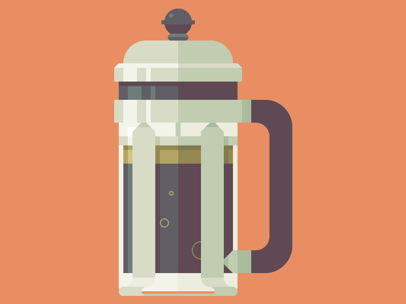
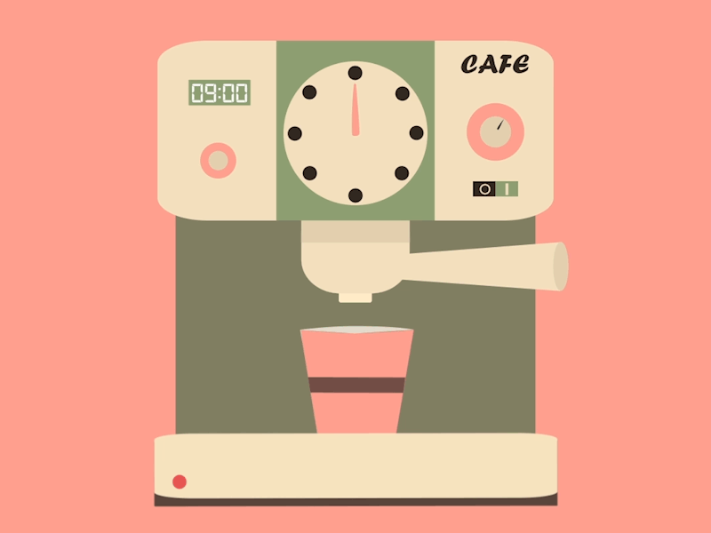
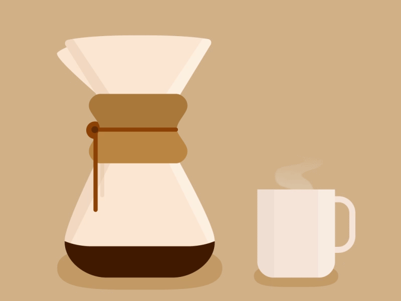

Prensa Francesa
La prensa francesa es un tipo de cafetera de émbolo o de pistón con el que se puede obtener una excelente taza de café de forma fácil y rápida.

El café preparado con prensa francesa tiene mucho cuerpo y es más denso, ya que retiene más aceites del café que otras cafeteras.
Maquina de Expreso
En este tipo de cafetera eléctrica, una resistencia calienta el agua que pasa a través del café molido.

Se caracteriza por su rápida preparación a una alta presión y por un sabor y textura más concentrados
Filtracion o Goteo
El método de preparación del café por goteo o filtro consiste simplemente en verter agua caliente sobre café molido, a través de un filtro de papel, plástico o una malla metálica.

El resultado es un café claro, puro y muy aromático.